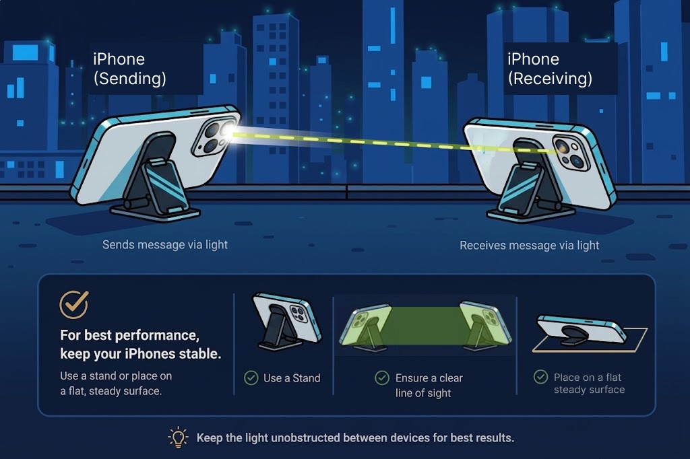

Guide
How to use
Morse Watcher allows you to send and receive Morse code by using your device's flashlight to transmit messages and its camera to translate flashing light into readable text. Two devices are required: one for sending and another for receiving. The app is available for iPhone and Android.
Quick Start
- Open Morse Watcher and allow camera access.
- Point the camera at one steady, clearly visible flashing light.
- Keep the phone still and tap to place the light inside the detection area.
- Use the right-side slider to tightly enclose the light within the target area.
- Wait while the app recognizes the timing of the signal.
- Read the translated message on screen.

Tips for better detection
- Use a bright signal with clear on-and-off flashes.
- Keep the camera and light source steady.
- Adjust the slider to make the detection area smaller so it tightly encloses the flashing light.
Troubleshooting
- Camera does not open: Check camera permission in the device settings.
- Signal is not detected: Keep the phone still. If the sender's speed is known, set it in the Settings menu.
- Translation looks incorrect: Clear the detection area and tap on the flashing light again.
- Detection stops: Confirm the light remains inside the detection area, or check if the sender has stopped flashing.
Settings
- Theme: Color theme for the app's interface.
- Send Speed: Flash speed when sending — match the receiver.
- Detection Speed: Reads the sender's pace. Set to Auto when sender speed is unknown, or set to fast/medium/slow when sender speed is known. (Fast: 100/300/700ms, Medium: 200/600/1400ms, Slow: 400/1200/2800ms).
- Brightness Graph: Toggle the brightness graph on or off.
- Sticky Target: Keeps your aim locked as the phone moves.
- Sound: Toggle app audio on or off.
- Siri Shortcut (iOS): Add a quick shortcut to let Siri send flashlight messages for you (located below the Subscription section).
Using Siri (iOS)
- Quick Setup: In the Morse Watcher settings menu, look below the Subscription section and tap the shortcut prompt to add it.
- Manual Setup: If you previously dismissed the prompt (by hitting the X), you can enable it manually. Open the Apple Shortcuts app on your iPhone, tap + to create a new shortcut, search for Morse Watcher, and add the Send Message action.
- Send a Message: Say "Send a message on Morse Watcher" or "Flash a message with Morse Watcher". Siri will then ask "What message should I flash in Morse?" and "How many times should I flash it?", and then open the app to begin flashing.
- Send SOS: Say "Send SOS on Morse Watcher" or "SOS on Morse Watcher" to immediately flash an SOS signal (see our SOS Emergency Guide).
FAQ
Questions
Can a phone decode Morse code from a flashing light?
Yes. Morse Watcher uses the phone camera to measure the brightness of the light you point it at, decides when the light is on or off, and converts the lengths of the flashes and gaps into dots, dashes, and text in real time.
How fast can the Morse code be?
Morse Watcher measures the light's brightness 30 times per second (30 fps) and learns the sender's dot, dash and gap lengths from the signal. Each flash and gap needs to last at least about 100 ms (3 frames) to be read reliably, which matches the app's Fast speed. Hand-sent and app-sent Morse at normal speeds decode best.
How far away can the light be?
That depends on how bright the light is compared with its background. A flashlight is easiest to read at night or in dim light; use the zoom control and keep the phone steady for distant signals.
Can I send Morse code back?
Yes. Type or dictate a message and Morse Watcher flashes it with your phone's flashlight at the Send Speed you choose in Settings.
Can I translate text to Morse code on this website?
Yes. Open the free Morse code translator, type your message, and the Morse code appears as you type. You can also watch it flash as light. Letters, numbers, and common punctuation are supported. Open the translator.
Does Morse Watcher need internet or cell signal?
No. Decoding and sending both run entirely on the phone, so two phones can exchange messages by light when there is no network at all.